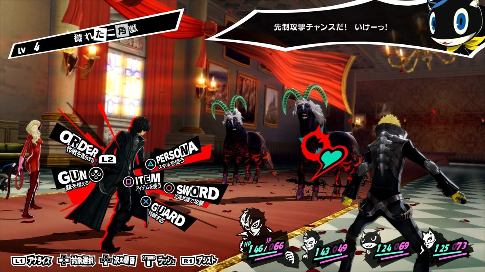
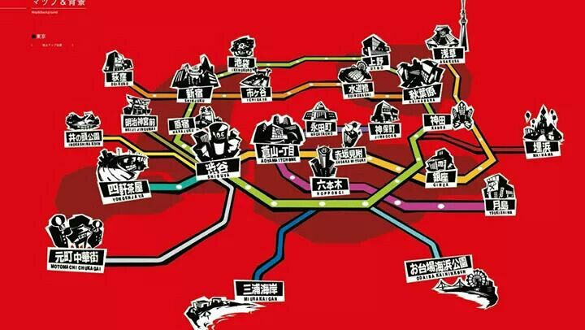

Joker ( le personnage principal), lycéen exilé à Tokyo se retrouve logé dans le grenier du café d'un monsieur appelé Sojiro, il doit se faire discret et intégrer un nouveau lycée malgré sa mauvaise réputation dû à son arrivée en pleine année. Mais tout ne se passe pas comme prévu et il découvre par hasard ou par destin, un multivers.Joker acquiert des pouvoirs selon les éléments ( feu, vent, mortel, psycho etc etc) et se retrouve dans des palais remplis de monstres ( appelés les ombres) qu'il devra combattre afin de résoudre des enquêtes et purifier le trésor.
Un palais c'est en réalité l'esprit de quelqu'un, là où ses désirs les plus sombres s'y cachent, et où le trésor correspond au vice le plus profond de la personne. Et le rôle de Joker dans tout ça, c'est de voler le trésor ( donc le vice) pour purifier le détenteur du palais. Il n'y arrivera pas seul et c'est pour ça que plein de personnages sont jouables durant les combats.
Le visuel d'un combat peut ressembler à ça et change selon les ombres à combattre:

Vous pouvez donc combattre par armes ou par "personnaes", ce sont les âmes des ombres battues, vous pouvez acquérir leur "masque" et donc leur pouvoir, avec ça vous pouvez faire évoluer votre puissance et celle des autres personnages jouables.

Comme dit précédemment, persona à un monde ouvert où l'ont peut parler avec les autres personnages, relationner, devenir amis, et amoureux. Il y a donc une carte où l'on peut se déplacer, pour interagir avec des lieux et des gens.Bien que les palais prennent du temps, la vie réelle et lycéenne en prend plus, il est très important de développer les compétences sociales et physiques de Joker afin de découvrir au mieux le jeu.